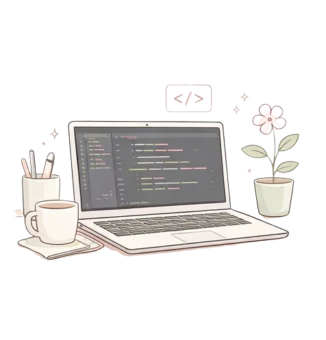
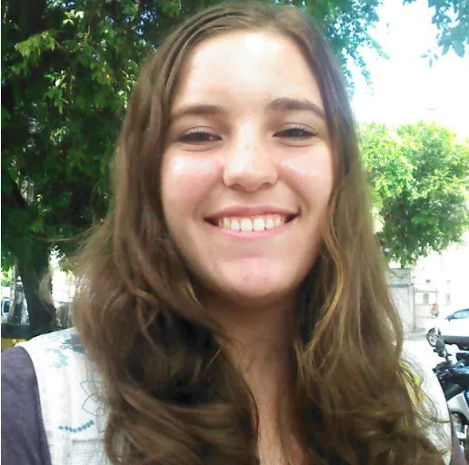
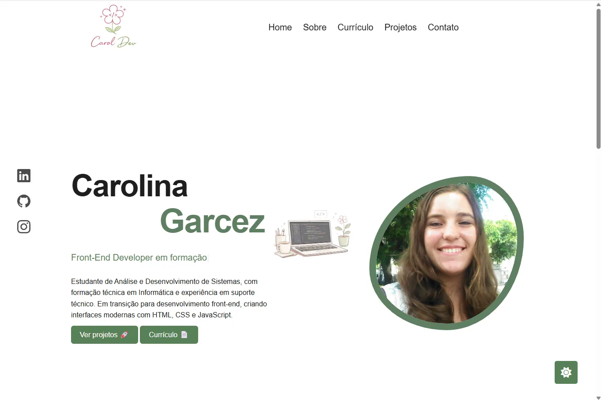
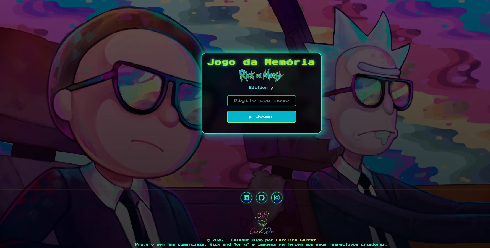
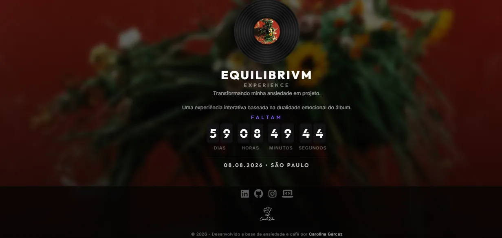
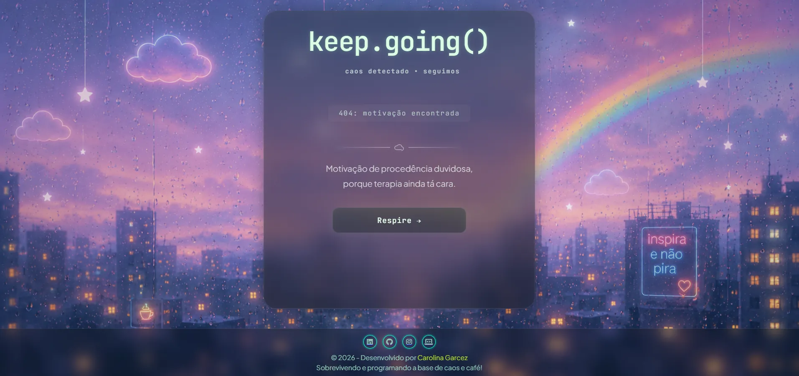

Carolina
Garcez

Estudante de Análise e Desenvolvimento de Sistemas, com formação técnica em Informática e experiência em suporte técnico. Em transição para desenvolvimento front-end, criando interfaces modernas com HTML, CSS e JavaScript.

Sobre mim
Oi! Eu sou a Carol 👋
Atualmente atuo com suporte técnico e administrativo, onde desenvolvi habilidades como organização, comunicação e resolução de problemas no dia a dia.
Em transição para desenvolvimento front-end,
criando interfaces modernas com HTML, CSS e JavaScript.
Acredito na evolução constante através da prática, por isso estou sempre desenvolvendo projetos e aprimorando minhas habilidades.
Conheça minha trajetória →Minhas Skills
Tecnologias e ferramentas que utilizo no meu dia a dia
Front-end
Ferramentas
Outros conhecimentos
Últimos Projetos

Portfólio Pessoal
Site responsivo desenvolvido com HTML, CSS e JavaScript.
Ver projeto →Ver código no GitHub →

🎮Jogo da Memória
Projeto interativo com lógica em JavaScript e foco em experiência do usuário.
Acessar aplicação 🎮Ver código no GitHub →

🎧 Equilibrivm Experience
Uma experiência digital inspirada na expectativa pela chegada da turnê do álbum Equilibrivm, da cantora Anitta.
Acessar aplicação 🎧Ver código no GitHub →

🌈 Keep Going Experience
Uma pequena pausa digital para te lembrar de continuar. Projeto interativo que gera frases motivacionais e imagens aleatórias a cada clique, trazendo leveza e inspiração para o dia a dia.
Acessar aplicação 🌈Ver código no GitHub →
Vamos conversar?
Estou aberta a oportunidades de estágio em front-end 💼
Entrar em contato